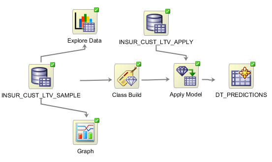
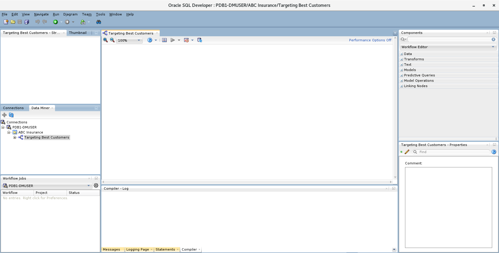
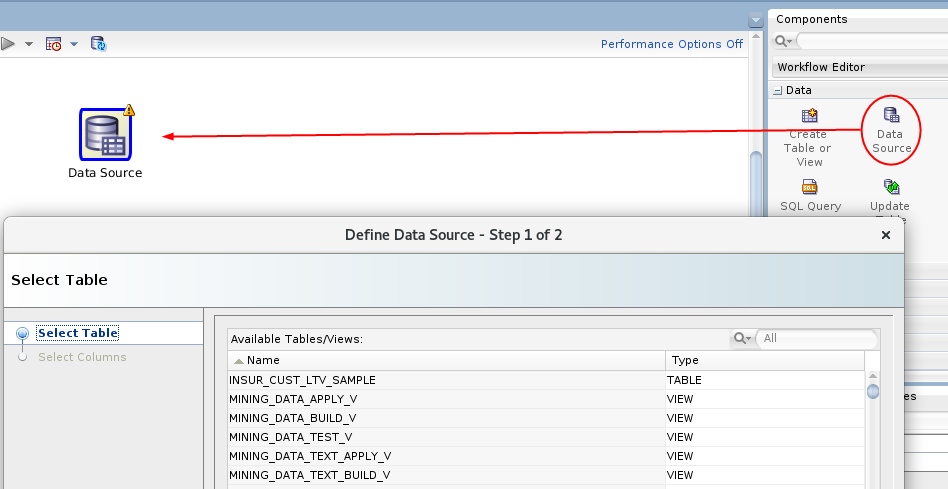
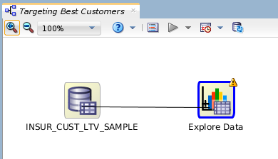
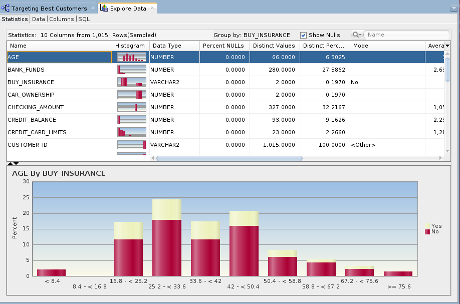
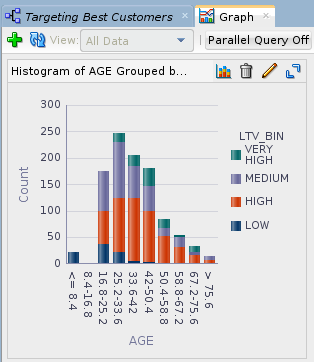
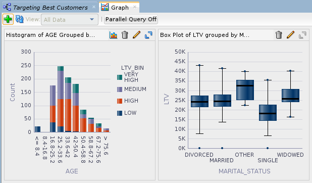

Create
a Data Miner Workflow
Create
a Data Miner Workflow Before You Begin
Before You Begin
This 15-minute tutorial shows you how to create a Data Miner workflow, add a data source and examine the data source.
Oracle SQL Developer is a free graphical tool for database development. With SQL Developer, you can browse database objects, run SQL statements and SQL scripts, and edit and debug PL/SQL statements. With SQL Developer, version 19.x, you can use the Oracle Data Miner against Oracle Database 19c.
Background
Data mining is the process of extracting useful information from masses of data by extracting patterns and trends from the data. Data mining can be used to solve many kinds of business problems, including:
- Predict individual behavior, for example, the customers likely to respond to a promotional offer or the customers likely to buy a specific product (Classification)
- Find profiles of targeted people or items (Classification using Decision Trees)
- Find natural segments or clusters (Clustering)
- Identify factors more associated with a target attribute (Attribute Importance)
- Find co-occurring events or purchases (Associations, sometimes known as Market Basket Analysis)
- Find fraudulent or rare events (Anomaly Detection)
Problem Definition and Business Goals
When performing data mining, the business problem must be well-defined and stated in terms of data mining functionality. For example, retail businesses, telephone companies, financial institutions, and other types of enterprises are interested in customer “churn” – that is, the act of a previously loyal customer in switching to a rival vendor. The statement “I want to use data mining to solve my churn problem” is much too vague. From a business point of view, the reality is that it is much more difficult and costly to try to win a defected customer back than to prevent a disaffected customer from leaving; furthermore, you may not be interested in retaining a low-value customer. Thus, from a data mining point of view, the problem is to predict which customers are likely to churn with high probability, and also to predict which of those are potentially high-value customers.
Building and Evaluation of Models
The Workflow creation process of Oracle Data Miner automates many of the difficult tasks during the building and testing of models. It’s difficult to know in advance which algorithms will best solve the business problem, so normally several models are created and tested. No model is perfect, and the search for the best predictive model is not necessarily a question of determining the model with the highest accuracy, but rather a question of determining the types of errors that are tolerable in view of the business goals.
Deployment
Oracle Data Mining produces actionable results, but the results are not useful unless they can be placed into the correct hands quickly. The Oracle Data Miner user interface provides several options for publishing the results.
Scenario
This lesson focuses on a business problem that can be solved by applying a Classification model. In our scenario, ABC Company wants to identify customers who are most likely to purchase insurance.
Note: For the purposes of this tutorial, the "Data and Acquisition" phase has already been completed, and the sample data set contains all required data fields. Therefore, this lesson focuses primarliy on the "Building and Evaluation of Models" phase.
What Do You Need?
- Oracle Database 19c Enterprise Edition
- Oracle SQL Developer version 19.x
- Oracle Data Miner User Account
 Create
a Data Miner Project
Create
a Data Miner Project
- If the Data Miner tab is not open, select Tools > Data Miner > Make Visible from the SQL Develper main menu.
- In the Data Miner tab, right-click PDB1-DMUSER and select New Project.
- In the Create Project window, enter ABC Insurance as the project name and then click OK.
 About Data Miner Workflows
About Data Miner Workflows
A Data Miner Workflow is a collection of connected nodes that describe a data mining processes. A workflow provides directions for the Data Mining server. For example, the workflow says "Build a model with these characteristics." The model is built by the data mining server with the results returned to the workflow.
What Does a Data Miner Workflow Contain?
Visually, the workflow window serves as a canvas on which you build the graphical representation of a data mining process flow, like the one you are going to create, shown here:

- Each element in the process is represented by a graphical icon called a node.
- Each node has a specific purpose, contains specific instructions, and may be modified individually in numerous ways.
- When linked together, workflow nodes construct the modeling process by which your particular data mining problem is solved.
As you will learn, any node may be added to a workflow by simply dragging and dropping it onto the workflow area. Each node contains a set of default properties. You modify the properties as desired until you are ready to move onto the next step in the process.
Sample Data Mining Scenario
In this multistep topic, you will create a data mining process that predicts which existing customers are most likely to purchase insurance.
To accomplishe this goal, you build a workflow that enables you to:
- Identify and examine the source data
- Select and run the models that produce the most actionable results
To create the workflow for this process, perform the following steps.
 Create
a Workflow and Add a Data Source
Create
a Workflow and Add a Data Source
- Right-click your project (ABC Insurance) and select New Workflow from the menu.
- In the Create Workflow window, enter Targeting Best
Customers as the name and click OK.

Description of the illustration workflow-window.png In the middle of the SQL Developer window, an empty workflow tabbed window opens with the name that you specified. On the lower right-hand side of the interface the Properties tab is shown. On the upper right-hand side of the interface, the Components tab of the Workflow Editor appears.
- In the Components tab, drill on the Data category.
- Drag and drop the Data Source node onto the
Workflow pane.

Description of the illustration add-data-source.png - Select INSUR_CUST_LTV_SAMPLE from the Available Tables/Views list.
- Click Next to continue.
You may remove individual columns that you don't need in your data source. In our case, we'll keep all of the attributes that are defined in the table.
- Click Finish.
 Examine
a Data Miner Data Source
Examine
a Data Miner Data Source
You can use an Explore Data node to examine the source data. You can also use a Graph node to visualize data. Although these are optional steps in a workflow, Oracle Data Miner provides these tools to enable you to verify if the selected data meets the criteria to solve the stated business problem.
- Drag and drop the Explore Data node from
the Data group to the Workflow.
A yellow Information (!) icon in the border around any node indicates that it is not complete. Therefore, at least one addition step is required before the Explore Data node can be used. In this case, you must connect the data source node to the Explore Data node to enable further exploration of the source data.
- Right-click the data source node (INSUR_CUST_LTV_SAMPLE),
select Connect from the pop-up menu, and
then drag the pointer to the Explore Data node.

Description of the illustration connect-explore-data.png - Double-click the Explore Data node to display the Edit Explore Data Node window.
- In the Group By list, select the BUY_INSURANCE attribute, and click OK.
- Right-click the Explore Data node and select Run.
Data Miner saves the workflow document, and displays status information at the top of the Workflow pane while processing the node. As each node is processed, a green gear icon displays in the node border. When the update is complete, the data source and explore data nodes show a green check mark in the borders.
 Review the Results
Review the Results
- Right-click the Explore Data node and select View Data from the menu.
- When a new tab opens for the Explore Data node, select the Statistics
tab.

Description of the illustration view-statistics.png Data Miner calculates a variety of statistics about each attribute in the data set, as it relates to the "Group By" attribute that you previously defined (BUY_INSURANCE). Output columns include: a Histogram thumbnail, Data Type, Distinct Values, Distinct Percent, Mode, Average, Median, Min and Max value, Standard Deviation, and Variance.
- Dismiss the Expore Data tab by clicking the Close icon (X).
- Use a Graph node to further visualize the data. Drag and drop the Graph node from the Data group to the workflow.
- Connect the data source node to the Graph node.
- Double-click the Graph node to display the New Graph window.
Specify the following attributes:
- Click the Histogram button at the top, to select the graph type.
- In the Histogram Settings region, select AGE for the Attribute value.
- Enable the Group By option.
- For the Group By Attribute option, select LTV_BIN.
- Click OK.

Description of the illustration histogram.png - Select the Maximize tool to view a full-window display of the graph.
- Create a second graph by clicking the New Graph tool (green "+" icon).
- Select the Box graph and specify the following attributes:
- Enter "Box Plot of LTV grouped by MARITAL_STATUS" as the title
- Select LTV (Life Time Value) as the attribute.
- Click Group By and select MARITAL_STATUS.
- Click OK.

Description of the illustration two-graphs.png
 Next Tutorial
Next Tutorial
In the next tutorial, you'll move from a high-level manual analytic exercise to using the power of database data mining.